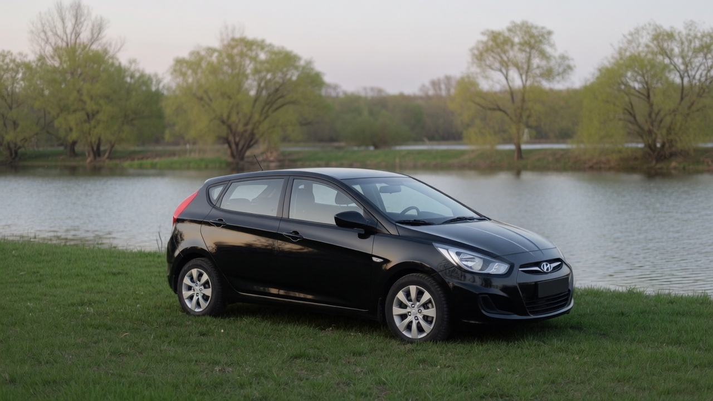
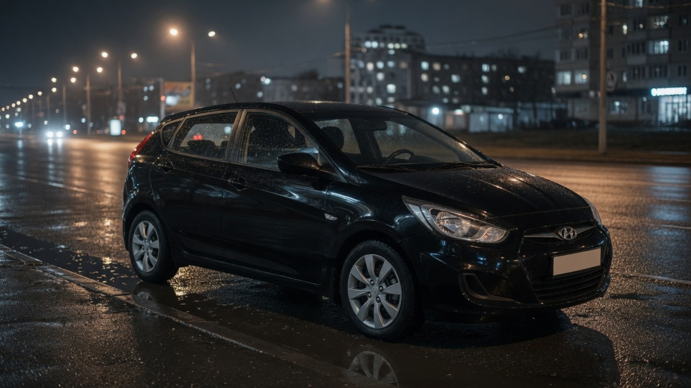
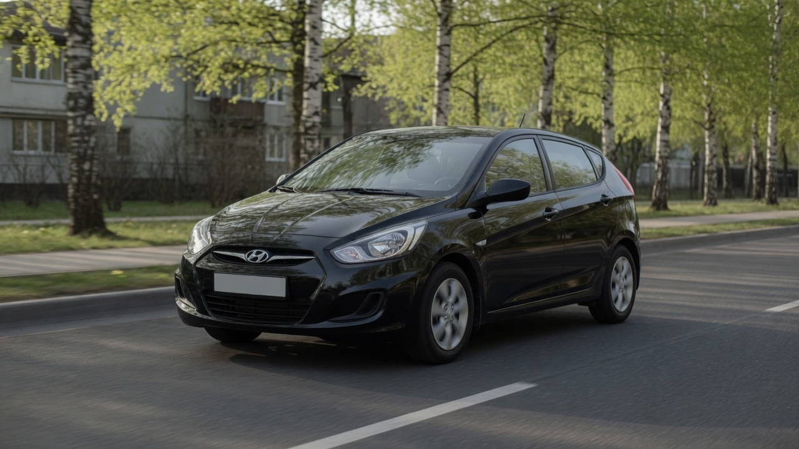

До поворота ключа
Круг вокруг машины
-
01
Осмотр
Кирилл обходит хэтчбек: шины, люк, нет ли под колёсами ветки из соседнего двора. Двери закрывает только после этого круга.
-
02
Запуск
Мотору даёт около полминуты и слушает холостой ход. Если звук ровный, можно выезжать, не газуя на месте.
-
03
Город
До реки он держит дистанцию и не обгоняет на узкой улице. Короткий кузов в потоке спокойнее, чем кажется по зеркалам.


Остановка на траве. Люк можно открыть здесь, у воды, а не оставлять его поднятым ещё во дворе.
Обратно
Та же дорога, другой свет
У реки Кирилл не задерживается надолго. Смотрит стёкла и топливо. Если всё спокойно, разворачивается на широком месте, не на узкой обочине.
Дома записывает километры. В апреле их было сорок шесть. Рядом пометил ветер: пыльца села на стекло, дворники справились с одного прохода.
Если возвращение застаёт дождь, чёрный кузов в фонарях выглядит иначе. Кирилл всё равно вешает ключ на крючок и не оставляет его в замке.

